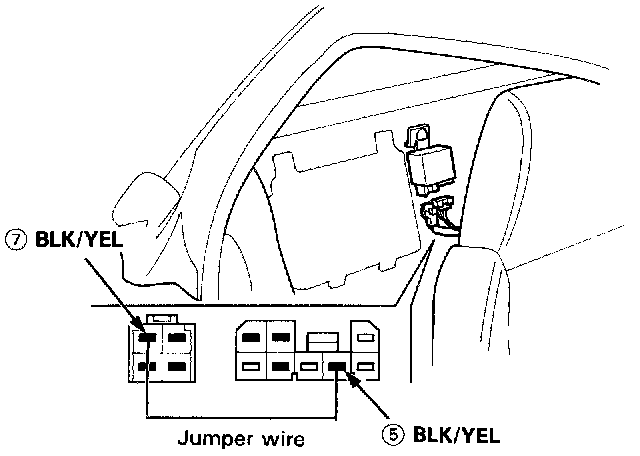
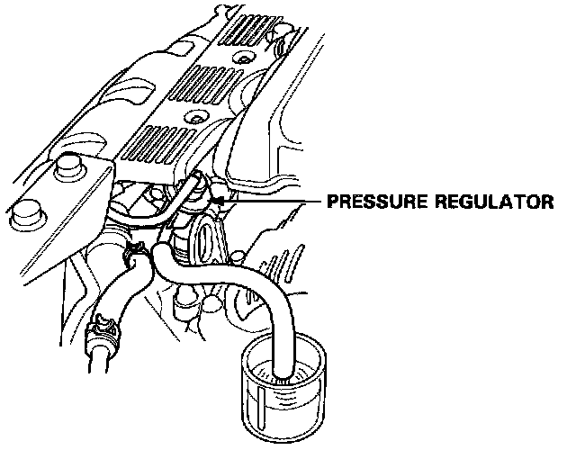

Fuel Pump Testing
Fuel Pump TestingWarning: Do not smoke during the test. Keep open flame away from your work area.
1. With the ignition switch OFF, disconnect the main relay connector.

2. Connect a jumper wire between the BLK/YEL wire (5) and BLK/YEL wire (7).
3. Relieve fuel pressure as described in Fuel Pressure Release then tighten the service bolt.
4. Disconnect the fuel return hose from the regulator.

5. Turn the ignition switch ON for 10 seconds and measure the amount of fuel flow.
Amount should be:
333 cm3 (11.2 oz) min. in 10 seconds at 12 V
- If fuel flow is less than 333 cm3 (11.2 oz), or there is no fuel flow, check for:
- Clogged fuel filter.
- Clogged fuel line.
- Pressure regulator failure.